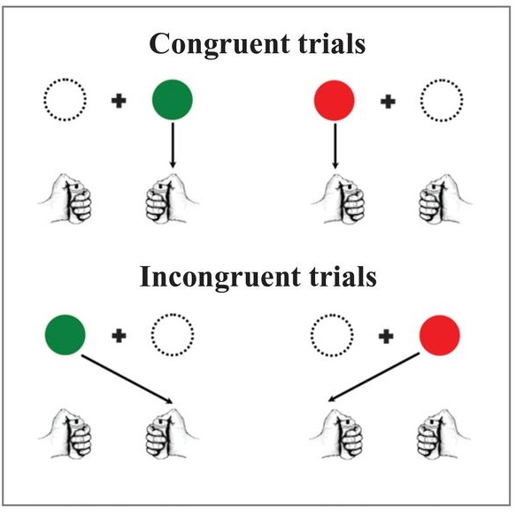

6 可重製的心理計時學研究
本單元學習目標：知覺研究的知識更新。可能的混淆因素~carry-over effect; speed-accuracy tradeoff。資料分析重點 ~ 極端值的設定及處理。如何使用開源實驗平台重製知覺實驗。如何使用開源統計軟體規劃實驗資料分析。
運用預先註冊範本 AsPredicted.org1列出的項目，檢驗 Zwaan et al. (2018) 的各項知覺實驗，重製實驗設計條件與原始實驗的相同及相異之處？
評估在本地執行重製實驗的可行性？什麼條件需要進行調整？
7 舊版教材回顧
7.1 心理計時學簡史
心理計時學(Mental chronometry)是實驗心理學奠基的重要分支科目之一。這門科學設計各種反應作業，測量人類運用知覺察覺刺激，到執行動作的反應時間(response time)。十九世紀實驗心理學奠基者之一，英國法蘭西斯·高爾頓爵士(Sir Francis Galton)，是首位有系統收集人類反應時間資料的科學家。高爾頓收集反應時間資料的目的是研究個別差異，特別是智力的差異。高爾頓曾在英國主辦的萬國博覽會，設立攤位收集倫敦地區上萬名男女老幼接受圖像與聲音的反應時間資料。自此之後測量的程序與工具不斷被改進，以及奠定第一代心理測驗理論的實證基礎。以樣本規模而言，高爾頓的研究工作可說是今日資料科學的先鋒。(Jensen, 2006)
高爾頓完成他的工作之後，荷蘭驗光師法蘭西斯庫斯·唐德斯(Franciscus Donders, 圖@ref(fig:ch04-fig02))提出第一套有科學心理學意義的相減法(subtraction method)。唐德斯對心理計時學的好奇始於十九世紀歐洲科學界的公案：格林威治天文台觀測誤差疑雲(Mollon & Perkins, 1996)。1796年63歲的台長與24歲的助理輪流於每日同一時段測量星體通過子午線的精確時間，經過一段時間的工作，台長發現助理的紀錄都比自己的慢一秒鐘，認為助理偷懶而開除他。後來兩人的紀錄引起當時生理學家的興趣，開啟人為誤差(Personal Equation)的研究，也是今天心理學持續探討因個別差異導致的測量誤差(Measurement errors)。

唐德斯的好友，德國生理學家赫爾曼·馮·亥姆霍茲(Hermann von Helmholtz)發明的肌動描記儀(myographion，圖@ref(fig:ch04-fig03))，是實現相減法的重要工具。用這套儀器的探針放置於身體的某個部位，能持續紀錄該部位肌肉的活動於圖紙。儀器在圖紙刻下記號的頻率是固定的，所以在設定好的情境中讓研究參與者運用該部位肌肉，就能從圖紙記錄推算研究參與者執行動作所花的反應時間。唐德斯的實驗是紀錄參與者嘴巴肌肉的動作，只要察覺到刺激，參與者立刻說出預定的口號做反應。以今天心理學家常使用的實驗方法來看，唐德斯的實驗是一種唸名作業(Naming)。

1869年唐德斯在荷蘭的學術刊物發表他與同事合作的心理計時實驗結果，這份報告於1969年翻譯為英文於現代專業期刊重新出版(Donders, 1969)。報告描述如何運用肌動描記儀測量參與者對各種刺激的反應時間，以及如何比較不同情境測得的反應時間，所測得的心智歷程。因為儀器的限制，唐德斯不能控制刺激呈現的時間點，描記儀所刻下的標記是參與者察覺刺激到執行反應的時間差，因此相減法是唐德斯的時代能想出的最佳分析方法。
唐德斯設計觸覺、視覺、與聽覺三種刺激，請參與者依順序進行反應。紀錄的反應時間在現代實驗心理學教材分別被稱為簡單反應時間(Simple Reaction Time)、選擇反應時間(Choice Reaction Time)、以及區辨反應時間(Discrimination Reaction Time)，命名背後與刺激的設計和預期測量的心智歷程有關。觸覺刺激是隨機碰觸參與者的左手或右手，參與者要報告那隻手被碰。所測得的心智歷程只有察覺(detection)與執行動作(execution)。視覺刺激是兩個或五個隨機挑出的字母，唸出是母音的字母，這段作業包括的心智歷程除了察覺與執行動作、還有區辨(discrimination)與選擇(choice)。聽覺刺激是由聽到的兩個或五個字母發音，說出是母音的發音，這段作業包括的心智歷程，比視覺刺激少了選擇。所以三段作業的反應時間結果，視覺減去聽覺的時間差是選擇心智歷程要花的時間，聽覺減去觸覺是區辨心智歷程會花的時間。
由於儀器的限制，透過實驗設計，研究者只要相減兩個條件的測量結果，就能估計區辨與選擇兩段心智歷程所花的時間。唐德斯的研究模式也影響之後的心理學者，例如這項研究的參與者是包括唐德斯本人在內的六位同事好友，相互擔任實驗者與參與者收集資料，今日有許多基礎知覺實驗還是收集少數參與者的大量反應資料，檢驗假設的真實性。另一方面，隨著測量儀器的更新，以及人類神經生理的知識越來越成熟，心理科學家提出更精緻的理論與方法探討反應時間與心智歷程的關聯性。
唐德斯的實驗方法被之後的心理學者改造之後，發現了一些能被穩定重現的心理學效應，例如叫色作業的Stroop效應(Stroop, 1935)。不論是使用紙筆配合碼錶計時，還是運作會記錄反應時間的電腦軟體，都能得到一致的結果。如同Stroop效應的心理學實驗證據，是心理計時學成為知覺、認知心理學，以及神經科學的發展基礎。這些領域的研究幾乎使用反應時間做測量依變項，同樣也面對測量誤差干擾測量結果的問題。為了讓新進研究者認識已知的測量誤差問題，以及找出解決測量誤差的更優方法，有部分心理學實驗研究法教材重視測量誤差的整理與已知的控制方法。
這本書重視實驗程序結果的可重製，取用的三項心理計時實驗都經過多次再現，不論參與者的社會背景，只要有能力快速反應都會重現最初的結果。其中兩種作業：Flanker與Motor priming，都是深入解析歷程彈性變化的更新方法。Simon Task與Stroop效應並列選擇歷程的研究典範，開啟今日已知的認知心理學領域起始課題。你可意注意各種需要測量人類反應速度的專業場域，心理計時學方法以各種面貌呈現於專業人員的工作內容之中，像是電子遊戲設計與競賽訓練(Dye et al., 2009; Kristoffer, 2018)。
7.2 心智歷程的彈性
一項作業要辨識兩種以上刺激，花在區辨那個刺激是目標的這段反應時間是區辨歷程。若是參與者有兩種以上的反應選項，選擇歷程是決定對應選項的過程。如果無論是什麼樣的刺激，無論是什麼樣的反應選項，每個人所花的反應時間是相等的，那麼相減法足以應付任何測量條件。然而人類心智絕對不可能如此簡單， (eriksenEffectsNoiseLetters1974?) 設計的Flanker task呈現區辨與選擇歷程有如汽車的速度排檔機制， (eimerEffectsMaskedStimuli1998?) 設計的Motor Priming發現遮蔽提示會拖慢反應速度。這兩種作業如何呈現心智歷程的彈性，我們以 Zwaan et al. (2018) 的公開腳本與資料解析其中關鍵。
Zwaan et al. (2018) 的Flank task設計兩套目標項目，例如字母A與E以及字母S與C，見到A或E要按左手反應鍵，見到S或C要按右手反應鍵。目標項目呈現於五個字母中間，與目標並排的其他四個字母則會是與目標相同的字母，要按同一個反應鍵的另一個字母，與另一套字母其中之一。這三種字母排列分別稱為刺激一致(stimuli congruent)、反應一致(response congruent)、與不一致(incongruent)。實驗結果顯示反應一致的平均反應時間比不一致短，以及刺激一致的平均反應時間比反應一致短。刺激一致與不一致之間的反應時間差距是完成這項作業的區辨歷程與選擇歷程，會花費的時間。那麼反應一致與其他兩種情況的反應時間差異，是節省了那一種歷程？
Motor priming的作業看似較簡單，參與者只要看到指示向左的符號(<<)按左方反應鍵，看到指示向左的符號(>>)按右方反應鍵。關鍵操作是指示符號出現前，會閃現一個相符(compatible)或不符(incompatible)的指示符號，只在螢幕停留16毫秒，而且與要反應的指示符號之間有100毫秒的空白。這段空白會隨機置入遮蔽物(Masked)或不置入任何遮蔽物(Unmasked)。 (eimerEffectsMaskedStimuli1998?) 的原始研究與 Zwaan et al. (2018) 的重製研究都發現不置入遮蔽物會加速參與者的反應，但是置入遮蔽物會拖慢反應。這項實驗結果顯示，即使不必對額外刺激做反應，閃現程序會減短或拉長心智歷程。至於是區辨或選擇歷程，你能提出解析可能原因的假設並設計實驗驗證嗎？
7.2.1 心理計時歷程的運作模式假設
雖然上述作業的刺激內容與反應選項各有特色，實驗條件導致的反應時間差異，最可能的原因都是區辨歷程或選擇歷程彈性調整。唐德斯的相減法能指出區辨與選擇歷程的本質，卻因為採用不同感官的資料，無法呈現區辨歷程與選擇歷程的變化。如果只根據唐德斯的方法與觀察資料，心理學者會錯誤地假設任何情況下，不同階段歷程的運作彼此獨立且互不影響。
如果區辨與選擇歷程彼此獨立，我們不可能重覆發現Simon效應與flanker效應。刺激的呈現位置(Simon作業)與干擾項目(flanker作業)都應該是區辨歷程能排除的無關資訊，然而與反應選項不一致的項目還是要花上顯著較長的時間，才能做出確反應。flanker作業安排的反應一致項目，更顯示選擇反應選項的歷程，不一定是區辨刺激項目的歷程完全結束才會開始。
不同階段歷程彼此獨立的假設也無法完全解釋Motor Priming的所有結果。如果歷程彼此獨立，應該預測不論有無置入遮蔽物，相符的指示符號都能縮短區辨歷程的時間，造成比不相符的指示符號反應更快的結果。然而實驗結果與此預測明顯不符合，所以 (eimerEffectsMaskedStimuli1998?) 還有增加實驗條件以及其他測量方法，試圖找到能提出更充分解釋的線索。
7.3 刺激位置-動作位置相符
Simon Task得名於第一篇論文的主要通訊作者(craftProcessingSymbolicInformation1970?)，後續研究累積至今已成為認知心理學者研究人類處理刺激位置與動作位置不一致的心智歷程，首先運用的方法。圖@ref(fig:ch04-fig04)取自 Bonini et al. (2014) 的論文，是 (craftProcessingSymbolicInformation1970?) 設計的一種版本。描繪的作業內容只有兩大類試驗：刺激與反應位置一致嘗試(Congruent Trials)；刺激與反應位置不一致嘗試(Incongruent Trials)，許多研究都能重製一致嘗試的平均反時間比不一致嘗試短的結果。而且不論刺激換成任何形式，或者改用別種感官刺激，都能重製相同結果。

Zwaan et al. (2018) 重製的版本正如圖@ref(fig:ch04-fig04)一樣，只是安排不同的顏色與色塊形狀。即使參與者參加兩次，都能測得一致的結果。一致嘗試與不一致嘗試的關鍵差異是刺激位置，似乎與區辨歷程較有關係。但是這樣的想法能被現在看到的結果支持嗎？如果你認為不夠充分，應該設計什麼樣的實驗，驗證你心目中的主張呢？
7.4 速度與正確率互補
心理計時學開始發展不久，科學家們就察覺收集的反應時間資料，經常有一部分參與者的反應時間相當短且正確率偏低，還有另一部分參與者的反應時間長且正確率偏高。前一種參與者通常是太緊張或急著完成實驗，沒有仔細區辨或選擇就執行動作；後一種參與者求好心切，已經充分區辨及選擇，還要花額外時間確認。這類資料如果佔一筆資料近半的比例，預期估計的心理歷程花費時間必然有所偏誤，如圖@ref(fig:ch04-fig05)的描述，兩類反應各自走向不同卻難以描述的歷程，疊加之後的資料分配，偏離預期估計值的程度有多大？這種現象泛見於任何以反應時間為測量依變項的實驗，稱為速度與正確率互補(Speed-Accuracy tradeoff)。

速度與正確率互補對各種實驗結果的影響因實驗條件與測量目標而異，心理學實驗常用的處理方式是去除或轉換個別參與者反應時間的極端值，就像 Zwaan et al. (2018) 是將每位參與者每個情況的反應時間平均值延伸三個標準差以外的資料去除。雖然多數認知心理學的實驗能以此法得到不偏的目標反應時間估計值，在應用領域的心理計時實驗通常有高比例的速度與正確率互補資料，如何辨識與評估過快或過慢的反應時間，對估計目標歷程實際花費時間要校正的偏誤，是必須學習研究的課題。
這裡使用 Zwaan et al. (2018) 公開的flanker task原始反應資料，示範評估速度與正確率互補的入門方法。圖@ref(fig:ch04-fig06)將所有資料依與者被分派的刺激版本(差異刺激、相同刺激)與參與次序(第一次實驗、第二次實驗)，分成四大塊。每一大塊的資料是每位參與者在三個實驗條件：刺激一致(stimuli congruent)、反應一致(response congruent)、與不一致(incongruent)，做出正確反應的平均反應時間與正確率。這些資料繪成的迴歸線。能看出正確率與反應時間之間的增減越勢。如果一種實驗條件產生相當比例的速度與正確率互補資料，迴歸係數通常為正，就像圖@ref(fig:ch04-fig06)裡，除了差異刺激，第一次實驗之外三種情況的不一致(incongruent)反應資料。但是要確認速度與正確率互補對這個條件的反應資料，造成的影響會不會導致偏差的估計值？需要使用合適的推論統計方法進行分析。

7.5 心理計時實驗的再現與重製
我們還要從重製 Zwaan et al. (2018) 的三個實驗結果，學習如何規畫再現研究。首先我們需要得知各項實驗應測得的效果量，這個單元介紹的三項實驗都是計算不一致(incongruent)或不符合(congruent)的反應時間，與相對情況反應時間的重覆量數(repeated measurement)之Cohen’s d。除了根據論文的說明，驗證其中報告的效果量之外。應該注意到每個實驗的設計特點，與計算效果量取用的分組條件。Simon Task與Flanker Task都有四組效果量，然而Flanker Task只有計算反應一致(response congruent)與不一致(incongruent)的效果量，並未計算刺激一致(stimuli congruent)與其他兩者的效果量。經由閱讀原始文獻[(craftProcessingSymbolicInformation1970?); eriksenEffectsNoiseLetters1974]，你能不能由此理解各種作業要測量的心智歷程，各自根據的理論有何特點？
Motor Priming比另外兩個實驗多了四個要分析的效果量，從之前的研究設計說明，我們知道這個實驗多出一個參與者內獨變項：有無置入遮蔽物。效果量的數值–包括正負與大小–似乎有很大的差異。根據原始文獻的內容(eimerEffectsMaskedStimuli1998?)，你能不能找到這個實驗設定遮蔽物的任何理由？
根據以上資料，現在要規劃一件再現實驗，其中一個重要的功課是應該徵求多少參與者？需要像 Zwaan et al. (2018) 為每一個實驗徵求近兩百位嗎？以一個教學課程來說，這樣的人數對學生來說是不小的負擔。還好已經有不少提供科學研究者計算樣本數與考驗力的應用程式問世，在此使用jpower示範，說明再現研究要得到接近 Zwaan et al. (2018) 的結果，至少要多少參與者？
Simon作業的效果量是三個心理計時實驗裡，效果量最強的項目。由圖@ref(fig:simon-power)可知，兩種版本的實驗資料估計大約徵求8到13人，就可達到90%至100%的考驗力。
Flanker作業的實驗結果最重要的效果量是反應一致(response congruent)與不一致(incongruent)的差異，是三組心理計時實驗最弱的效果量，由圖@ref(fig:flanker-power)可知，估計至少要徵求22位至40位參與者，才能達到約90%~100%的考驗力。
Motor Priming有置入遮蔽物及未置入遮蔽物兩種條件，各有一種促發效應結果。無遮蔽物的實驗結果獲得的效果量小於有遮蔽物，從圖@ref(fig:motor-power)可知，有遮蔽物的情況需要徵求至少12位參與者，無遮蔽物的情況則需要徵求至少5位參與者，才能保障90%以上的考驗力。
7.6 習作
- 在每項實驗的
Raw Data表單裡，那些欄位是真正用於分析的依變項資料？那些欄位是獨變項？那些是計算參與者平均反應的必要欄位？ - 為何有部分資料是極端值？這份公開資料處理極端值的方式是什麼？
- 論文附錄呈現的每項實驗變異數分析，除了每項實驗的關鍵獨變項，都有一個參與梯次的參與者內變項，與一個兩梯次實驗材料是否相同的參與者間變項。變異數分析呈現這兩個獨變項都未影響實驗的關鍵效果，由這兩個獨變項的設定，與最後呈現的結果。經過重製分析結果，你認為這三個心理計時實驗具備可再現的條件是什麼？
- 根據三項實驗的考驗力與樣本數分析，註冊再現研究要如何規劃與執行？
COS提供的google doc版本↩︎